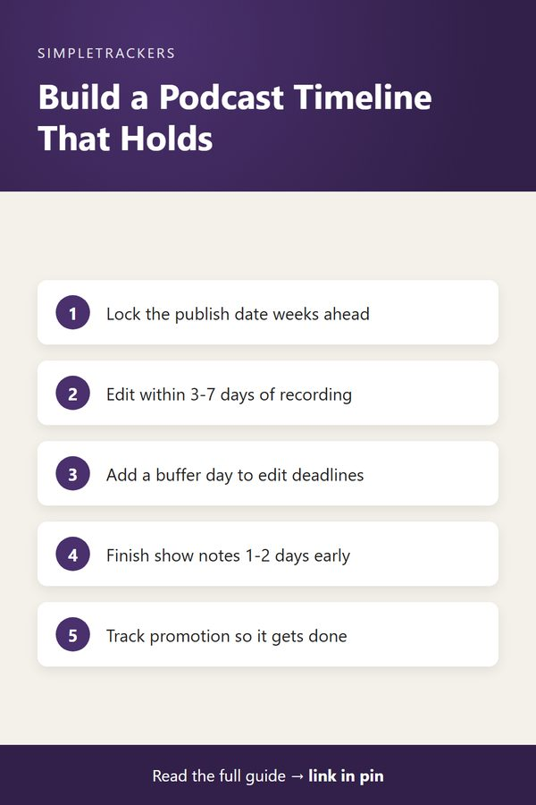

<!doctype html>
<html lang="en">
<head>
<script async src="https://pagead2.googlesyndication.com/pagead/js/adsbygoogle.js?client=ca-pub-7383810158576704" crossorigin="anonymous"></script>
<meta charset="utf-8">
<title>Production Timeline: Managing Recording, Editing, and Publishing Dates</title>
<meta name="viewport" content="width=device-width, initial-scale=1">
<meta name="description" content="Manage every podcast deadline from recording through editing, show notes, and publishing, and keep a realistic production timeline.">
<link rel="canonical" href="https://ghengoy.github.io/podcast-producer-tracker/production-timeline-from-recording-to-publish.html">
<meta property="og:type" content="article">
<meta property="og:title" content="Production Timeline: Managing Recording, Editing, and Publishing Dates">
<meta property="og:description" content="Manage every podcast deadline from recording through editing, show notes, and publishing, and keep a realistic production timeline.">
<meta property="og:url" content="https://ghengoy.github.io/podcast-producer-tracker/production-timeline-from-recording-to-publish.html">
<meta property="og:image" content="https://ghengoy.github.io/podcast-producer-tracker/images/hero/production-timeline-from-recording-to-publish.jpg">
<meta name="p:domain_verify" content="ed2ca7fb71cecfffeba5d895002ee1d1"/>
<script data-goatcounter="https://ghengoy.goatcounter.com/count" async src="//gc.zgo.at/count.js"></script>
<style>
  :root { --accent: #4A306D; --accent-dark: #32204A; --tint: #F1ECF7; --ink: #1f2328; --muted: #5d6470;
          --line: #e4e1da; --paper: #fbfaf7; --card: #ffffff; }
  * { box-sizing: border-box; }
  body { margin: 0; background: var(--paper); color: var(--ink); font-family: -apple-system, BlinkMacSystemFont, "Segoe UI", Roboto, "Helvetica Neue", Arial, sans-serif;
         font-size: 18px; line-height: 1.75; -webkit-font-smoothing: antialiased; }
  a { color: var(--accent); text-underline-offset: 3px; }
  a:hover { color: var(--accent-dark); }
  img { max-width: 100%; height: auto; }
  .site-header { background: var(--card); border-bottom: 1px solid var(--line); }
  .site-header .inner { max-width: 760px; margin: 0 auto; padding: 14px 20px; display: flex; align-items: center; justify-content: space-between; gap: 16px; flex-wrap: wrap; }
  .brand { font-weight: 700; color: var(--ink); text-decoration: none; font-size: 17px; display: flex; align-items: center; gap: 10px; }
  .brand-mark { width: 28px; height: 28px; border-radius: 8px; background: var(--accent); display: inline-block; position: relative; }
  .brand-mark::after { content: ""; position: absolute; left: 7px; top: 8px; width: 14px; height: 3px; background: #fff; border-radius: 2px;
                       box-shadow: 0 5px 0 #fff, 0 10px 0 rgba(255,255,255,.6); }
  .site-header nav { display: flex; gap: 18px; font-size: 15px; }
  .site-header nav a { color: var(--muted); text-decoration: none; }
  .site-header nav a:hover { color: var(--accent); }
  main { max-width: 760px; margin: 0 auto; padding: 32px 20px 56px; }
  article > h1, main > h1 { font-size: clamp(30px, 5vw, 42px); line-height: 1.2; letter-spacing: -0.02em; margin: 8px 0 12px; }
  h2 { font-size: 27px; line-height: 1.3; letter-spacing: -0.01em; margin: 52px 0 14px; padding-top: 6px; scroll-margin-top: 16px; }
  h3 { font-size: 21px; line-height: 1.35; margin: 32px 0 8px; }
  p { margin: 0 0 20px; }
  ul, ol { padding-left: 1.3em; margin: 0 0 22px; }
  li { margin-bottom: 8px; }
  li::marker { color: var(--accent); }
  strong { font-weight: 650; }
  .pillar-link { font-size: 15px; margin: 0 0 4px; }
  .pillar-link a { text-decoration: none; }
  .post-meta { color: var(--muted); font-size: 15px; margin: 0 0 24px; }
  .post-hero { margin: 0 0 28px; }
  .post-hero img { width: 100%; aspect-ratio: 16 / 9; object-fit: cover; border-radius: 14px; display: block; background: var(--tint); }
  figcaption { font-size: 13px; color: var(--muted); margin-top: 8px; line-height: 1.5; }
  figcaption a { color: var(--muted); }
  .toc { background: var(--card); border: 1px solid var(--line); border-radius: 12px; padding: 18px 22px 8px; margin: 0 0 32px; font-size: 16px; }
  .toc-title { font-weight: 700; margin: 0 0 8px; font-size: 14px; letter-spacing: .06em; text-transform: uppercase; color: var(--muted); }
  .toc ol { margin: 0 0 10px; }
  .toc li { margin-bottom: 4px; }
  .toc a { text-decoration: none; }
  .key-takeaways, .callout { border-radius: 12px; padding: 20px 24px 6px; margin: 0 0 30px; }
  .key-takeaways { background: var(--tint); border-left: 5px solid var(--accent); }
  .key-takeaways ul { margin-bottom: 14px; }
  .box-title { font-weight: 700; margin: 0 0 8px; font-size: 14px; letter-spacing: .06em; text-transform: uppercase; color: var(--accent-dark); }
  .callout { background: var(--card); border: 1px solid var(--line); border-left: 5px solid var(--accent); }
  .callout.note { border-left-color: #b7791f; }
  .callout.note .box-title { color: #8a5a12; }
  .steps { list-style: none; counter-reset: step; padding-left: 0; }
  .steps > li { counter-increment: step; position: relative; padding-left: 52px; margin-bottom: 18px; }
  .steps > li::before { content: counter(step); position: absolute; left: 0; top: 0; width: 34px; height: 34px; border-radius: 50%;
                        background: var(--accent); color: #fff; font-weight: 700; font-size: 16px; display: flex; align-items: center; justify-content: center; }
  .table-wrap { overflow-x: auto; margin: 0 0 28px; border: 1px solid var(--line); border-radius: 12px; background: var(--card); }
  table { border-collapse: collapse; width: 100%; font-size: 16px; line-height: 1.5; }
  th, td { text-align: left; padding: 12px 16px; border-bottom: 1px solid var(--line); vertical-align: top; }
  th { background: var(--tint); color: var(--accent-dark); font-weight: 700; }
  tr:last-child td { border-bottom: 0; }
  .pin-figure { margin: 36px auto; max-width: 400px; text-align: center; }
  .pin-figure img { border-radius: 12px; box-shadow: 0 10px 30px rgba(0,0,0,.12); display: block; }
  blockquote { margin: 0 0 24px; padding: 4px 0 4px 20px; border-left: 3px solid var(--line); color: var(--muted); font-style: italic; }
  .post-cta { display: flex; gap: 24px; align-items: center; background: var(--card); border: 1px solid var(--line); border-top: 5px solid var(--accent);
              border-radius: 14px; padding: 24px; margin: 48px 0 8px; }
  .post-cta img { width: 150px; border-radius: 10px; flex-shrink: 0; }
  .post-cta h3 { margin: 2px 0 6px; }
  .post-cta p { margin-bottom: 12px; font-size: 16px; }
  .cta-kicker { font-size: 13px !important; letter-spacing: .06em; text-transform: uppercase; color: var(--muted); margin: 0 !important; }
  .buy-button { display: inline-block; background: var(--accent); color: #fff !important; padding: 12px 22px; border-radius: 10px; text-decoration: none; font-weight: 700; font-size: 16px; }
  .buy-button:hover { background: var(--accent-dark); }
  .product-box { background: var(--card); border: 1px solid var(--line); border-radius: 14px; padding: 24px; margin: 24px 0 36px; display: grid; grid-template-columns: 200px 1fr; gap: 0 24px; align-items: center; }
  .product-box img { width: 200px; border-radius: 10px; grid-row: span 3; }
  .product-box h3 { margin: 0 0 6px; }
  .product-box p { margin-bottom: 12px; font-size: 16px; }
  .product-grid { display: grid; grid-template-columns: repeat(auto-fill, minmax(160px, 1fr)); gap: 16px; margin: 12px 0 36px; }
  .product-card { display: flex; flex-direction: column; gap: 4px; background: var(--card); border: 1px solid var(--line); border-radius: 12px; padding: 12px; color: var(--ink); text-decoration: none; font-size: 15px; line-height: 1.4; }
  .product-card:hover { border-color: var(--accent); }
  .product-card img { width: 100%; border-radius: 8px; margin-bottom: 4px; }
  .product-card span { color: var(--muted); }
  .product-card .price { color: var(--accent); font-weight: 700; }
  .post-list { list-style: none; padding: 0; display: grid; gap: 16px; }
  .post-list li { margin: 0; }
  .post-card { display: flex; gap: 18px; background: var(--card); border: 1px solid var(--line); border-radius: 14px; overflow: hidden; color: var(--ink); text-decoration: none; }
  .post-card:hover { border-color: var(--accent); }
  .post-card img { width: 200px; object-fit: cover; flex-shrink: 0; background: var(--tint); }
  .post-card-text { display: flex; flex-direction: column; gap: 6px; padding: 16px 18px 16px 0; }
  .post-card-text strong { font-size: 19px; line-height: 1.35; }
  .post-card-desc { color: var(--muted); font-size: 15px; line-height: 1.55; }
  .post-card-date { color: var(--muted); font-size: 13px; }
  .site-footer { border-top: 1px solid var(--line); background: var(--card); color: var(--muted); font-size: 15px; }
  .site-footer .inner { max-width: 760px; margin: 0 auto; padding: 28px 20px; display: flex; justify-content: space-between; gap: 16px; flex-wrap: wrap; }
  .site-footer p { margin: 0; }
  @media (max-width: 600px) {
    body { font-size: 17px; }
    h2 { font-size: 23px; margin-top: 40px; }
    .post-cta, .post-card { flex-direction: column; }
    .post-cta img { width: 120px; }
    .post-card img { width: 100%; aspect-ratio: 16 / 9; }
    .post-card-text { padding: 0 16p
<header class="site-header"><div class="inner">
<a class="brand" href="index.html"><span class="brand-mark" aria-hidden="true"></span>Podcast Production</a>
<nav><a href="index.html">Guides</a><a href="pillar-guide.html">Start here</a></nav>
</div></header>
<main>
<article>
<h1>Production Timeline: Managing Recording, Editing, and Publishing Dates</h1>
<p class="pillar-link"><a href="pillar-guide.html">&larr; Back to the Complete Podcast Production Guide</a></p>
<p class="post-meta"><time datetime="2026-08-17">August 17, 2026</time> &middot; 5 min read</p>
<figure class="post-hero"><figcaption>Photo: <a href="https://www.flickr.com/photos/186095195@N02/49431078271" rel="nofollow">chocolatedazzles</a>, <a href="https://creativecommons.org/licenses/by/2.0/" rel="license nofollow">CC BY 2.0</a></figcaption></figure>
<div class="key-takeaways">
<p class="box-title">Key takeaways</p>
<ul>
<li><strong>Five phases:</strong> recording, editing, show notes, publishing and promotion, each with its own deadline.</li>
<li><strong>Typical deadlines:</strong> editing 3-7 days after recording; show notes 1-2 days before the publish date.</li>
<li><strong>Work backwards:</strong> start from the publish date and set every earlier deadline from it.</li>
<li><strong>Build in buffer:</strong> if an edit usually takes 3 days, give it 4, so delays don't cascade into missed publish dates.</li>
</ul>
</div>
<nav class="toc" aria-label="Contents"><p class="toc-title">In this guide</p>
<ol>
<li><a href="#the-production-pipeline">The Production Pipeline</a></li>
<li><a href="#working-backwards-from-publish-date">Working Backwards from Publish Date</a></li>
<li><a href="#managing-multiple-episodes">Managing Multiple Episodes</a></li>
<li><a href="#why-it-matters">Why It Matters</a></li>
</ol></nav>
<p>Every podcast episode follows a timeline: it starts with a recording session, moves through editing, gets wrapped in show notes, and finally publishes to your feed. The trouble is that each step has its own deadline, and they're all interconnected.</p>

<ul>
<li>If recording runs late, editing gets squeezed.</li>
<li>If editing takes longer than expected, publishing gets pushed back.</li>
<li>If you're not tracking these deadlines explicitly, episodes miss their publish dates regularly.</li>
</ul>

<p>The real challenge emerges when you're running multiple episodes in parallel. One episode might be in editing while another is being recorded and a third is scheduled to publish tomorrow. Without explicit tracking of each phase for each episode, you lose track of which episode is where. Something falls through, a deadline gets missed, and your listeners notice the episode didn't arrive when they expected it.</p>

<h2 id="the-production-pipeline">The Production Pipeline</h2>

<p>Think of your production workflow as a series of phases, each with a start date, an end date, and a deadline. Here's the pattern most podcasters follow:</p>

<div class="table-wrap">
<table>
<thead><tr><th>Phase</th><th>What happens</th><th>Deadline to track</th></tr></thead>
<tbody>
<tr><td>Recording</td><td>You and your guest record, in one session or several for long-form conversations</td><td>Recording date (or date range if multi-part) and raw length</td></tr>
<tr><td>Editing</td><td>Silence removed, intros/outros added, levels balanced, issues fixed</td><td>Typically 3-7 days after recording</td></tr>
<tr><td>Show notes</td><td>Summary, timestamps, links to resources, guest information</td><td>Usually 1-2 days before publish date</td></tr>
<tr><td>Publishing</td><td>Episode goes live, is uploaded to platforms and announced</td><td>The publish date: your hard deadline</td></tr>
<tr><td>Promotion</td><td>Clips, emails, social posts, sponsor notifications</td><td>Flexible, but worth tracking</td></tr>
</tbody>
</table>
</div>

<h3>Recording</h3>

<p>What matters for tracking is the recording date and how long the raw recording is. The raw length tells you how much editing work is coming.</p>

<h3>Editing</h3>

<p>The 3-7 day range depends on how complex your show is and how much outsourcing you use. Track the editing deadline explicitly so you know when this phase must be complete.</p>

<h3>Show notes</h3>

<p>You write show notes while editing happens, or after. They often depend on the edited episode, so this phase overlaps with editing.</p>

<h3>Publishing and promotion</h3>

<p>Everything before the publish date has to be finished, so lock that date in weeks in advance and plan backwards from it. Promotion comes after publishing. It's flexible, but tracking it means you don't forget to promote episodes.</p>

<h2 id="working-backwards-from-publish-date">Working Backwards from Publish Date</h2>

<p>The key insight is that you need to work backwards from your publish date. If Episode 5 is scheduled to publish on Friday:</p>

<ol class="steps">
<li><strong>Friday: publish.</strong> The date your audience expects.</li>
<li><strong>Wednesday: show notes complete.</strong></li>
<li><strong>Tuesday: editing complete.</strong></li>
<li><strong>Monday: recording done.</strong></li>
</ol>

<p>If your recording runs long, you immediately know editing gets compressed. Once you recognize the squeeze, you can either reschedule the recording or push the publish date.</p>

<div class="table-wrap">
<table>
<thead><tr><th>Without tracking</th><th>With tracking</th></tr></thead>
<tbody>
<tr><td>You realize at 4pm Thursday that the episode still isn't edited and it's supposed to publish tomorrow.</td><td>You see Thursday morning that editing is behind, and you have time to address it.</td></tr>
<tr><td>You panic and rush the edit. Quality suffers, or you miss the publish date and disappoint your audience.</td><td>You find extra editing time Thursday, or discuss moving the publish date before your audience expects a new episode.</td></tr>
</tbody>
</table>
</div>

<figure class="pin-figure">

<figcaption>Save this summary to Pinterest for later.</figcaption>
</figure>

<h2 id="managing-multiple-episodes">Managing Multiple Episodes</h2>

<p>This becomes critical when you're producing multiple episodes per week. If you publish two episodes weekly, you typically have:</p>

<ul>
<li>Two recordings scheduled per week</li>
<li>Two concurrent editing projects</li>
<li>Two show notes documents in progress</li>
<li>Two publish dates at different times</li>
</ul>

<p>A single tracking system showing where each episode sits in the pipeline prevents mistakes. At a glance, you can see that Episode 7 is being recorded this week, Episode 8 is in editing and due Friday, Episode 9 publishes Monday morning, and Episode 10 needs recording scheduled. Each episode has clear deadlines, and each person on the team (if you have one) knows what they're responsible for and when.</p>

<div class="callout tip">
<p class="box-title">Pro tip: build in buffer time</p>
<p>If your typical edit takes 3 days, set the editing deadline for 4 days after recording. If show notes usually take 1 day, give 1.5 days. This buffer catches delays without cascading into missed publish dates.</p>
</div>

<h2 id="why-it-matters">Why It Matters</h2>

<p>Consistency builds audience loyalty. If your listeners know new episodes arrive every Friday at 9am, that's a promise. Missing that deadline occasionally is forgettable. Missing it regularly damages trust.</p>

<p>Explicit tracking of production timelines helps you keep that promise. You know weeks in advance which episodes publish when, and you manage the workflow to hit those dates reliably.</p>

<p>The Podcast Producer &amp; Episode Management Tracker includes columns for recording date, editing deadline, publish date, and publish status. This lets you see your entire production pipeline at a glance and manage multiple episodes without dropping any. Start tracking your timeline today and watch your publishing consistency improve immediately.</p>

<p>Learn how to organize your production workflow with the <a href="https://kimnet8.gumroad.com/l/eagpjf">Podcast Producer & Episode Management Tracker</a>.</p>

<aside class="post-cta">

<div><p class="cta-kicker">Make it easy to keep track</p>
<h3>Podcast Producer & Episode Management Tracker</h3>
<p>A ready-to-use spreadsheet and guide for tracking episodes from idea to publish.</p>
<p><a class="buy-button" href="https://kimnet8.gumroad.com/l/eagpjf">Get the Tracker &middot; $19.99</a></p></div>
</aside>

</article>
</main>
<footer class="site-footer"><div class="inner">
<p><a href="https://podcast-producer-tracker.beehiiv.com/subscribe">Get an email when new guides go live</a></p>
<p>&copy; 2026 <a href="/">SimpleTrackers</a> &middot; <a href="/about.html">About</a> &middot; <a href="/contact.html">Contact</a> &middot; <a href="/privacy.html">Privacy</a></p>
</div></footer>tps://podcast-producer-tracker.beehiiv.com/subscribe">Get an email when new guides go live</a></p>
<p>&copy; 2026 SimpleTrackers</p>
</div></footer>
</body>
</html>
